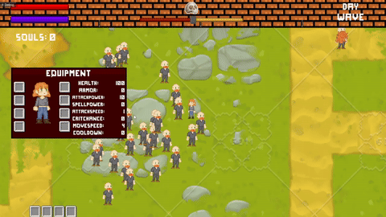

Sentience
Sentience is an online multiplayer game where 2 teams of up to 4 players wrestle for control of society long after the humans they were built to replace have disappeared.
Steam Shipped Unity
Systems-focused Unity & Unreal dev, specializing in combat, AI, UI, and game feel.
2D top-down village defense ARPG - soul-siphoning, morality, and wave-based survival.
Soul Snatched: Ginger Edition is a 2D top-down action RPG where a lone ginger defends villages from nightly zombie invasions. By day, you prepare defenses, upgrade gear, and manage relationships. By night, you survive waves, siphon souls, and walk the line between protector and monster.
Beyond the game client, Soul Snatched includes a full tooling stack: a Node.js/Express
backend and React dashboard used to author items, enchantments, and vendor inventories.
The tools export clean JSON which is consumed by Unity importers to rebuild
ItemDef ScriptableObjects and vendor stock automatically, keeping design
and implementation in sync without manual data entry.
Solo developer - responsible for all gameplay programming, systems design, UI implementation, backend tools, and project architecture.

Systems & narrative design case study, large-scale class design, encounter structure, and world architecture.
Echoes of Genesis is a long-form game design project exploring MMO-scale systems: specialization-driven classes, scalable combat frameworks, and narrative delivered as a gameplay system. This page showcases design artifacts and production-ready concepts (not a gameplay build).


Commercial projects shipped as part of the Red Meat Games team, contributing as a gameplay and systems programmer.
Sentience is an online multiplayer game where 2 teams of up to 4 players wrestle for control of society long after the humans they were built to replace have disappeared.
Steam Shipped Unity
First-person survival horror centered around light-based mechanics, exploration, and player guidance through feedback and UI.
Steam Shipped Unity
Narrative-driven, immersive audio game with interactive branching storylines.
Google Play Shipped Unity Mobile
Narrative adventure released across mobile and console platforms, with emphasis on accessibility and cross-platform delivery.
Google Play iOS Switch Shipped Unity
I am a gameplay and UI programmer with 7+ years of experience in Unity and Unreal, including shipped commercial titles and deep prototyping work. I specialize in combat systems, AI, UI flows, and making mechanics feel responsive and readable.
I enjoy building systemic gameplay - things like wave managers, ability frameworks, reputation systems, and dynamic UI that clearly reflects the underlying game state.
Email:
moe.savari@gmail.com
GitHub:
github.com/moesavari
LinkedIn:
linkedin.com/in/mohammedsavari